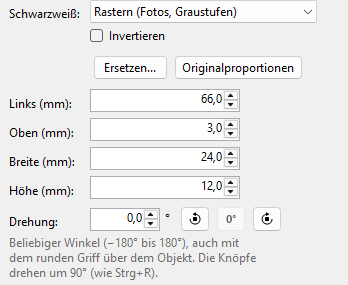

Bilder
Logos, Fotos und Symbole. Der Drucker druckt nur schwarze Punkte; wie aus dem Bild Schwarz und Weiß wird, bestimmen Sie selbst.
-
Bild einfügen
Werkzeug Bild oder Einfügen > Bild... und eine Bilddatei wählen. Durchsichtige Stellen werden weiß gedruckt.
- Unterstützt
- PNG (auch mit Transparenz), JPG/JPEG, BMP, GIF (bei Animationen das erste Bild), TIF/TIFF (die erste Seite), WebP (bei Animationen das erste Bild), HEIC/HEIF (Handyfotos), PDF (die erste Seite), SVG (bleibt in jeder Größe scharf); über Alle Dateien auch ICO und EMF/WMF (werden in Pixel umgewandelt)
- Nicht in SVG
- Text entlang einer Linie und senkrechter Text (im Zeichenprogramm vorher in Pfade umwandeln), Filter, Masken, Verweise auf andere Dateien
Hat ein SVG solche Teile, steht in den Einstellungen des ausgewählten Bildes Teile dieses Bildes können nicht gedruckt werden – Tipp: als PNG einfügen. Das (i) daneben nennt, was fehlt, und wie alles gedruckt wird: das Bild im Zeichenprogramm als PNG speichern und mit Ersetzen... einfügen.
Text in einem SVG wird mit den Schriftarten dieses PCs gedruckt. Fehlt eine, nimmt der QL Label Maker eine Ersatzschrift und sagt Dieses Bild wird mit einer Ersatzschrift gedruckt. Das (i) nennt die Schriftart; installieren Sie sie und fügen Sie das Bild mit Ersetzen... neu ein.
WebP braucht die „Webp-Bilderweiterungen“ von Windows; sie sind bei Windows 11 dabei. Für HEIC braucht Windows die kostenlosen „HEIF-Bilderweiterungen“ und „HEVC-Videoerweiterungen“ aus dem Microsoft Store. Fehlen sie, sagt der QL Label Maker das beim Einfügen.
Beim Einfügen wird ein Bild auf höchstens 2000 Pixel je Seite verkleinert, mehr als ein Etikett drucken kann; ein SVG bleibt eine Zeichnung. Es wird in der .qllabel-Datei gespeichert; die Bilddatei wird danach nicht mehr gebraucht.
An den Ecken ändern Sie die Größe, das Seitenverhältnis bleibt dabei erhalten. Mit gedrückter Umschalttaste ändern Sie sie frei.
-
Schwarzweiß

- Rastern (Fotos, Graustufen)
- Graue Flächen werden zu feinen Punktmustern. Gut für Fotos und Verläufe.
- Schwellenwert (Logos, Zeichnungen)
- Was dunkler als der Schieberegler ist, wird schwarz, der Rest weiß. Gut für klare Kanten.
- Invertieren (weiß auf schwarz)
- tauscht Schwarz und Weiß.
Die Zeichenfläche zeigt das Ergebnis Punkt für Punkt, so wie es gedruckt wird.
-
Austauschen und Proportionen
Ersetzen... tauscht das Bild gegen eine andere Datei aus. Originalproportionen stellt das Seitenverhältnis der Bilddatei wieder her.